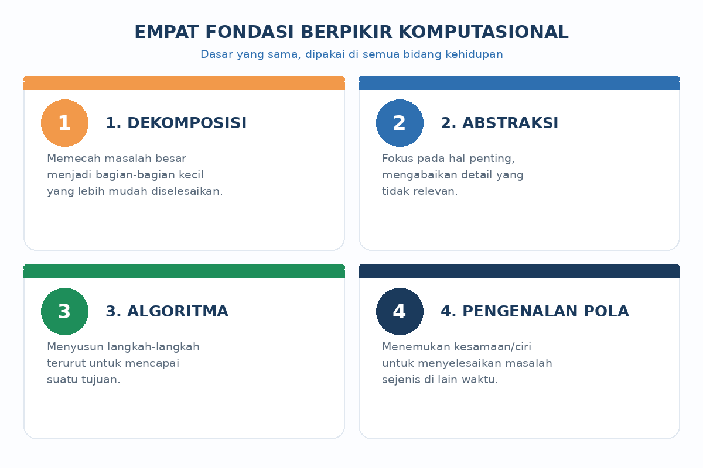
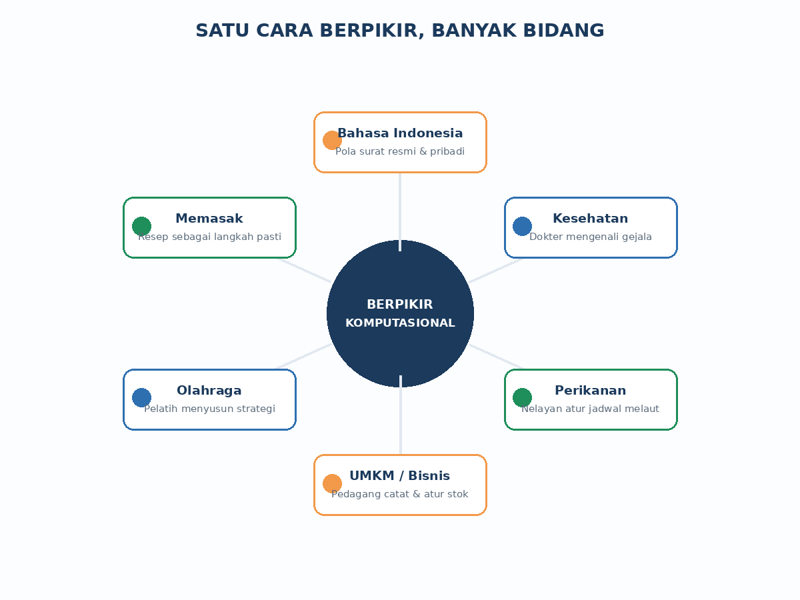
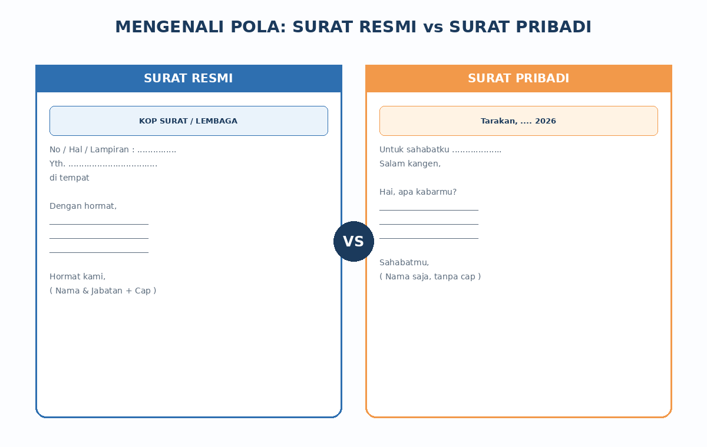
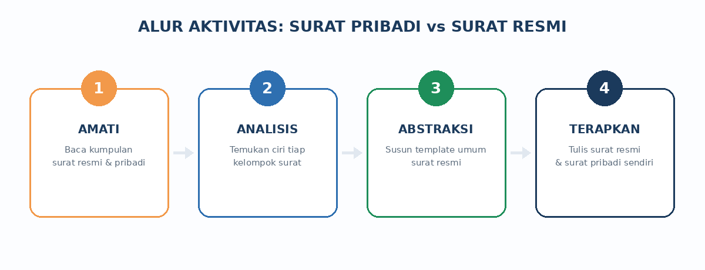
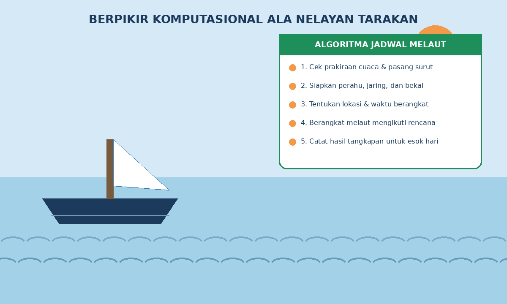
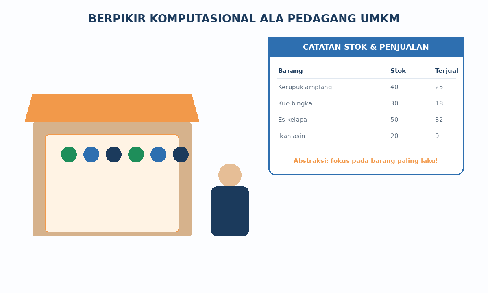

Ngapain Belajar Informatika Kalau Bukan Mau Jadi Programmer?
Pernah nggak sih kamu mikir gitu? Tenang, wajar banget. Tapi coba deh baca materi ini sampai habis — kamu bakal kaget, soalnya cara berpikir yang kamu latih di pelajaran Informatika ini ternyata dipakai di HAMPIR SEMUA BIDANG, mulai dari dokter, nelayan, sampai pedagang kaki lima.
Balikin Ingatan: 4 Jurus Berpikir Komputasional
Berpikir komputasional (BK) itu punya 4 "jurus" dasar yang sudah kamu pelajari di pertemuan-pertemuan sebelumnya:

- Dekomposisi — mecah masalah gede jadi bagian-bagian kecil biar nggak pusing.
- Abstraksi — fokus ke hal penting aja, yang nggak penting di-skip dulu.
- Algoritma — nyusun langkah-langkah biar tujuan tercapai, urut dan jelas.
- Pengenalan pola — nemuin kemiripan biar masalah yang mirip bisa diselesaikan dengan cara yang sama.
BK Ternyata Ada di Mana-Mana
Coba deh perhatikan orang-orang di sekitarmu. Banyak banget profesi yang sebenarnya "diam-diam" pakai berpikir komputasional:

Surat Resmi vs Surat Pribadi
Sekarang kita buktikan sendiri lewat bidang yang kelihatannya "nggak nyambung" sama Informatika: Bahasa Indonesia! Coba deh, kamu tulis pesan buat sahabatmu, terus tulis juga surat izin ke sekolah. Pasti gaya bahasanya beda banget, kan?

Nah, di sinilah BK bekerja. Dengan mengamati banyak contoh surat resmi dan surat pribadi, kamu bisa mengenali POLA masing-masing kelompok, lalu meng-ABSTRAKSI pola itu jadi sebuah TEMPLATE (format baku) yang bisa dipakai berulang kali.
| Komponen | Surat Resmi | Surat Pribadi |
|---|---|---|
| Bahasa | Baku / formal | Sehari-hari, tapi tetap sopan |
| Pengirim | Lembaga / instansi | Perorangan |
| Kop surat | Ada | Tidak ada |
| Header (no/hal/lampiran) | Ada | Tidak ada |
| Salam pembuka | Sapaan resmi | Bebas, akrab |
| Tanda tangan | Ada jabatan + cap | Cukup nama |

Cerita dari Tarakan: BK di Kehidupan Sehari-hari Kita
Nelayan dan Algoritma Melaut
Buat kamu yang tinggal di Tarakan, pasti familiar sama suasana pesisir. Sebelum berangkat melaut, nelayan nggak asal berangkat aja — mereka mengikuti langkah-langkah tertentu supaya aman dan hasil tangkapannya maksimal. Itu namanya algoritma!

Pedagang UMKM dan Seni Fokus ke Data
Pernah lihat ibu-ibu jualan kerupuk amplang atau kue bingka di pasar? Supaya dagangannya nggak rugi, mereka mencatat stok dan penjualan setiap hari, lalu fokus ke barang yang paling laku. Itulah abstraksi — memilih yang penting dari banyak data.

Rangkuman — Yang Perlu Kamu Ingat
- Berpikir komputasional (BK) bukan cuma buat anak IT — semua bidang membutuhkannya.
- Empat fondasi BK: dekomposisi, abstraksi, algoritma, dan pengenalan pola.
- Lewat aktivitas surat resmi vs surat pribadi, kamu berlatih mengenali pola dan membuat abstraksi (template).
- Semakin sering kamu "mendisposisikan" (membiasakan) BK, semakin siap kamu menghadapi masalah apa pun — di bidang apa pun yang kamu pilih nanti.
Kata Kunci
| Istilah | Penjelasan |
|---|---|
| Disposisi | Kebiasaan atau kecenderungan bersikap/berpikir dengan cara tertentu secara konsisten. |
| Dekomposisi | Memecah persoalan kompleks menjadi bagian-bagian kecil yang lebih mudah diselesaikan. |
| Abstraksi | Menyarikan bagian penting dari suatu persoalan dan mengabaikan yang tidak penting. |
| Template | Format/pola umum hasil abstraksi yang dapat dipakai berulang kali. |
Yuk, Cek Pemahamanmu!
Coba jawab dulu di kepalamu atau di buku catatan, baru klik tombol untuk melihat kunci jawabannya.
Setelah ini, lanjutkan kegiatan bersama kelompokmu lewat LKPD "Surat Pribadi vs Surat Resmi" yang diberikan gurumu.